Para describir el movimiento de un objeto necesitamos responder varias preguntas fundamentales:
Posición
La posición no es simplemente saber “dónde está” algo: es la representación cuantitativa y precisa del lugar que ocupa un objeto dentro de un sistema de referencia, como un plano cartesiano, un eje recto o incluso un espacio tridimensional.
Su importancia radica en que permite ubicar el objeto en el espacio de manera inequívoca, utilizando valores numéricos que pueden variar con el tiempo.
Históricamente, el concepto de posición surgió para pasar de descripciones vagas (“cerca”, “lejos”) a descripciones objetivas (“a 20 metros del punto de origen en el eje X”).
Esto es fundamental para la física, porque el cambio de posición respecto al tiempo es lo que define el movimiento.
Matemáticamente, se expresa como:
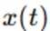
en una dimensión, o como:
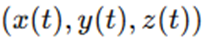
en tres dimensiones, donde t representa el tiempo.
Esta representación permite analizar cómo varía la posición de un objeto a lo largo del tiempo y es el punto de partida para definir otros conceptos como desplazamiento y velocidad.
Trayectoria
La trayectoria no solo describe “el camino” de un objeto: es el conjunto ordenado de todas las posiciones que ocupa un objeto durante su movimiento, formando una línea o curva en el espacio.
Este concepto es importante porque muestra visualmente cómo se mueve el objeto: si sigue una línea recta, una curva, una circunferencia, una parábola, etc.
Esto nos ayuda a clasificar tipos de movimiento (rectilíneo, circular, oscilatorio, etc.) y comprender qué fuerzas pueden estar actuando.
Por ejemplo:
- Un auto en una autopista recta tiene trayectoria rectilínea.
- Una piedra lanzada describe una parábola por la acción de la gravedad.
La trayectoria no indica el sentido ni la rapidez con que el objeto se mueve, solo la forma del recorrido.
| 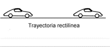 | 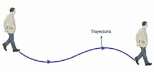 | 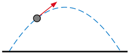 |
| Fig. 5: Trayectoria rectilínea | Fig. 6: Trayectoria curva | Fig. 7: Trayectoria parabólica |
Distancia recorrida
La distancia recorrida es mucho más que “un número de metros”: es la longitud total del camino que realmente ha seguido el objeto, sin importar si regresa o cambia de dirección.
Es una magnitud escalar, lo que significa que sólo tiene valor numérico (módulo), sin dirección. Esto lo diferencia del desplazamiento, que sí tiene dirección y sentido.
En física, conocer la distancia recorrida permite calcular otras magnitudes importantes como la rapidez media, el trabajo realizado por una fuerza o el gasto de energía.
Matemáticamente, para movimiento rectilíneo uniforme:
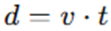
donde v es la rapidez (módulo de la velocidad) y t el tiempo.
Si el movimiento no es uniforme, sumamos los tramos:
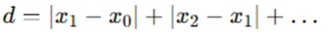
Ejemplo:
Si alguien avanza 10 m, luego retrocede 4 m:
● Distancia total: .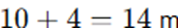
Así sabemos que físicamente el objeto recorrió 14 m de camino real, aunque no se haya alejado tanto de su origen.
Desplazamiento
El desplazamiento es más que solo “ir de un punto a otro”: es el vector que une directamente la posición inicial con la posición final, describiendo el cambio neto de ubicación del objeto.
Esto implica:
● Módulo (valor numérico)
● Dirección (línea sobre la que se mueve)
● Sentido (hacia dónde se mueve sobre esa línea)
Es una magnitud vectorial, esencial para calcular la velocidad media, la aceleración y para analizar fuerzas en dinámica.
Matemáticamente, en una dimensión:
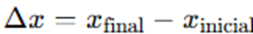
En varias dimensiones:
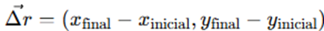
Ejemplo:
Si sales del km 0, caminas hasta el km 5, luego vuelves hasta el km 3:
● Posición inicial: 0 km
● Posición final: 3 km
● Desplazamiento: 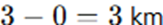
Aunque hayas recorrido 5 + 2 = 7 km de camino, tu desplazamiento neto es solo 3 km.
Este concepto permite responder preguntas como:
● ¿Cuánto “realmente” cambió de lugar el objeto?
● ¿En qué dirección está respecto a donde empezó?